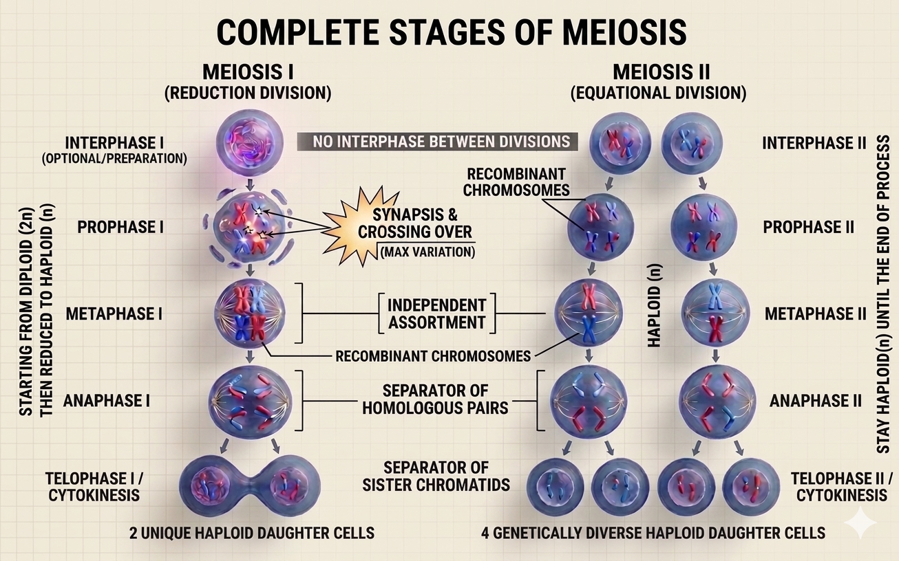

🔷PHASE-BY-PHASE BREAKDOWN🔷
Meiosis I
▶ INTERPHASE I
WHAT HAPPENED? The homologous chromosomes pairs line up at the equatorial plane and have independent assortment.
▶ PROPHASE I
WHAT HAPPENED? There is three major events occur here.
1. Synapsis: Homologous chromosomes pair up and form a structure called a bivalent or tetrad.
2. Tetrad/Bivalent Formation: Each homologous pair contains 4 chromatids.
3. Crossing Over: Non-identical chromatids exchange DNA segments which occurs at point called chiasma.
▶ METAPHASE I
WHAT HAPPENED? The homologous chromosomes pairs line up at the equatorial plane and have independent assortment.
▶ ANAPHASE I
WHAT HAPPENED? Each homologous chromosomes separate from its homologous pair and be pulled to the opposite poles.
▶ TELOPHASE I
WHAT HAPPENED? Cytokinesis process occurs after the homologous chromosomes arrive at the opposite pole cells. Cytokenisis process seperate the cell and produce two daughter cells in haploid condition.
Meiosis II
▶ INTERPHASE II
WHAT HAPPENED? The homologous chromosomes pairs line up at the equatorial plane and have independent assortment.
▶ PROPHASE II
WHAT HAPPENED? Nuclear membrane breaks down and spindle fibres form again in both daugther cells.
▶ METAPHASE II
WHAT HAPPENED? The homologous chromosomes made up by sister chromatids pair line up at the equatorial plane and have independent assortment.
▶ ANAPHASE II
WHAT HAPPENED? The centromere which hold the sister chromatids together starts to separate and pulled each chromatid to the opposite poles.🎯Each chromatid at this stage is known as a chromosome.
▶ TELOPHASE II
WHAT HAPPENED? Cytokinesis process occurs after the chromosomes arrive at the opposite pole cells. Cytokenisis process seperate the cell and produce four daughter cells in haploid condition with each haploid cell contains half the number of parent cell chromosomes
♦️THE IMPORTANTS OF MEIOSIS♦️
🧑👩👧👦 Sexual Reproduction
Produces gametes that fuse to create offspring with genetic material from both parents
🌈 Genetic Diversity
Creates unique combinations through crossing over and independent assortment, essential for evolution
⚖️ Chromosome Balance
Reduces chromosome number so offspring have the correct number when gamete fusion occurs
🔬 Population Variation
Increases genetic variation within populations, giving organisms better chance to adapt and survive